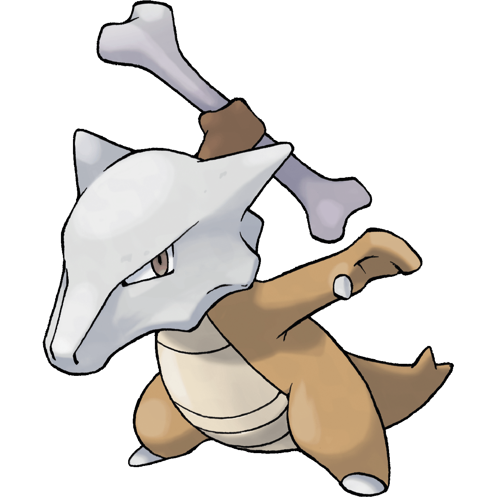

Torna alla Home

Cubone è un piccolo Pokémon terropode, che ha la caratteristica di indossare un teschio (presumibilmente di sua madre) sulla testa(...)ha la caratteristica di essere un Pokémon solitario e di non essere in grado di stringere nuove amicizie, a causa della perdita di sua madre. Durante la notte piange spesso perché non riesce a dimenticare il ricordo della madre. Il suo pianto, che fuoriesce dal teschio che indossa, diventa una triste melodia che viaggia per molti chilometri attraverso le montagne. Alcune volte piange anche di giorno e, nelle notti di luna piena, i suoi lamenti aumentano perché la luna fa ricordare a Cubone il viso di sua madre.
(Fonte:
https://wiki.pokemoncentral.it/Cubone#Biologia)

Siamo tutti d’accordo di aver letto una storia molto triste.Sebbene quella del teschio sia una mera supposizione, non è da escludere la sua autenticità, in quanto è un fatto noto e acclamato nella “lore” di Pokémon. Sappiamo però che, proprio grazie a questo dolore che il pokémon orfano si porta dietro, Cubone diventa sempre più forte e, giorno dopo giorno, luna piena dopo luna piena, cresce e matura sempre di più, fino ad evolversi in Marowak (vedi figura qui sopra). La transizione avviene una volta che si è lasciato il passato alle spalle, e può finalmente iniziare a vivere come le altre creature. Mi piace molto questa storia, in quanto insegna ad andare avanti nonostante tutto, e a plasmare la sofferenza in forza per diventare persone migliori.